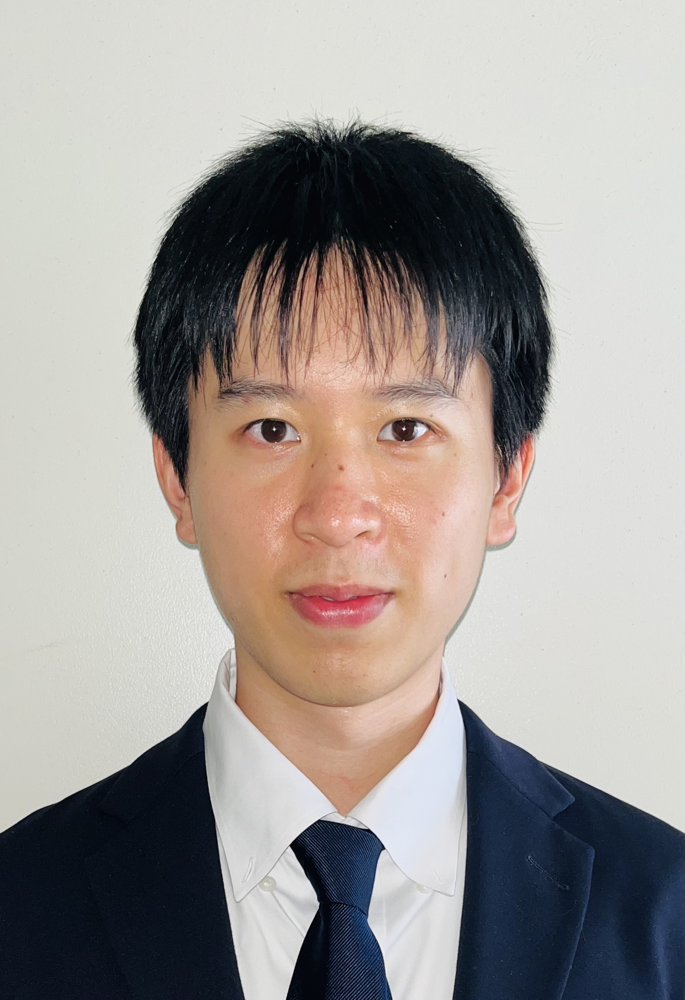

PhD student & Project Assistant Professor, Keio University SFC · JSPS Research Fellow (DC1)

My research is mainly about improving the performance of computer systems. I have approached this from several directions: autonomous optimization of configurable systems, concurrency control in transaction processing, distributed training, and photonic computing for AI.
Beyond my academic work, I have engaged in engineering projects to improve existing DBMS, by contributing patches to PostgreSQL 15, and by building a new MySQL storage engine based on Silo concurrency control.
Supervisor: Prof. Hideyuki Kawashima
Aiso Award — best master's thesis, Class of 2025
Commendation of Academic Excellence, Class of 2023 (GPA 3.88)
Co-supervising undergraduate research on RL-based thread count tuning for concurrency control.
Built a Silo-based MySQL storage engine: 19× TPS over MySQL/InnoDB under TPC-C with semi-sync replication.
Database alert analysis system combining LLMs and statistical analysis.
Int8-quantized Whisper inference in CUDA C++, 15% faster.
AI Exposure Score pipeline for assessing AI-related risks and opportunities in Japan.
LineairDB storage engine for MySQL: 5× TPS over InnoDB under YCSB-A.
Patch author for PostgreSQL Release 15.